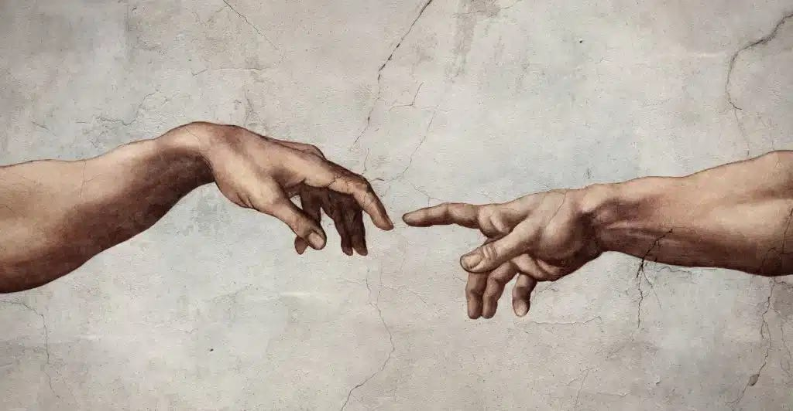
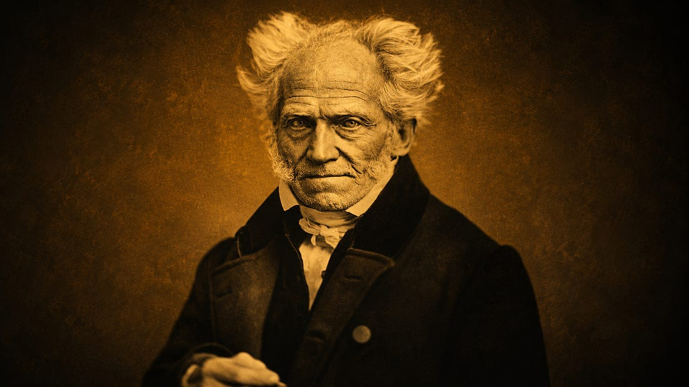
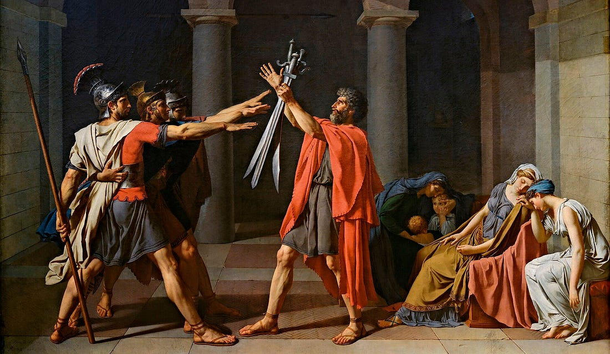

Il y a une chose qui m’a toujours frappé dans les longues courses d’endurance, c’est à quel point, à un moment donné, le corps ne suit plus seul.
Sur une de mes courses dont j’ai parlé dans Cogito #002, il y a eu des kilomètres où quelque chose d’autre que les jambes courait. La conviction que l’effort avait un sens, que des personnes m’attendaient plus loin sur le parcours, que cette course était l’aboutissement de quelque chose de plus grand qu’elle. Tout cela a rendu mon corps capable d’aller à des endroits qu’il n’aurait pas atteints seul. Des endroits que je ne pensais pas pouvoir atteindre.
Dernièrement, j’ai pris le départ d’un trail en montagne avec une blessure au genou droit encore récente. Beaucoup d’appréhension. Beaucoup de craintes. Mon discours intérieur était centré autour d’une seule peur : aggraver la blessure, surtout en descente. Il ne faut pas que je force. Abandonner reste une option. Fais attention au genou droit.
J’ai abandonné. Mais pas à cause du genou droit. À cause du genou gauche, celui qui n’avait rien.
Je ne dis pas que j’ai provoqué cette blessure par la pensée. Mais la coïncidence m’a fait réfléchir. Quel aurait été le scénario si j’avais abordé cette course différemment, sans cette peur comme boussole intérieure ?
C’est l’idée que j’ai envie d’explorer dans cet essai. À quel point notre vie intérieure : nos pensées, nos convictions, notre rapport à nous-mêmes façonne notre corps ? Et à l’inverse, dans quelle mesure notre état physiologique produit-il notre philosophie ? Que nous apprend la vie des philosophes sur leur philosophie ? Et quelle est, en définitive, la posture la plus utile pour mieux vivre ?
Un postulat admis, rarement intériorisé
L’idée que le corps et l’esprit sont liés n’est pas controversée. Elle est même, à bien y regarder, la position la plus ancienne. Le problème n’est donc pas cognitif. Presque tout le monde admet que l’état du corps influence la pensée, que le manque de sommeil altère le jugement, que l’alimentation agit sur l’humeur, que le sport libère.

Et pourtant.
On estime que 30 à 40 % de la population des pays industrialisés souffre de manque de sommeil chronique. La part d’aliments ultra-transformés dans notre alimentation quotidienne n’a jamais été aussi haute. Ces réalités ne semblent pas vraiment nous inquiéter sur la qualité de la pensée que nous développons.
Nous savons que le corps et l’esprit sont liés. Nous n’en tirons que rarement les conséquences.
Platon, l’homme aux larges épaules
Le mot “Platon” vient du grec platos : le large, le costaud. Une des questions est de savoir si le surnom est une métaphore de la grandeur de l’esprit ou un constat physique. Les deux sont peut-être vrais. Platon pratiquait le pancrace, l’ancêtre du MMA, un sport de combat complet qui mêlait lutte et frappe.
Il y a dans cette image quelque chose qui dérange notre vision moderne du “philosophe”. Le philosophe athlète, qui plus est dans un sport plutôt violent, n’est pas ce à quoi on nous a habitués. Durant l’Antiquité, c’était la norme.
Les Grecs ne se posaient pas la question de l’articulation entre corps et esprit parce que cette question, pour eux, ne se posait tout simplement pas. Mathema signifiait la connaissance en général. Un philosophe était mathématicien, rhéteur, parfois homme politique, souvent sportif. La sectorisation avec le penseur pâle d’un côté, l’athlète de l’autre, est une dissociation moderne. Et comme chaque changement, il a des avantages, et un coût.
Ce coût, c’est la perte d’une certaine approche holistique. En apprenant à spécialiser et à compartimenter, nous avons parfois oublié que la discipline intellectuelle et la discipline physique ne sont pas deux pratiques parallèles : elles se nourrissent l’une l’autre.
Schopenhauer, l’architecte de son malheur ?
Une fois qu’on admet cette interdépendance, vient la question classique de l’œuf et de la poule. Qu’est-ce qui influence quoi en premier : la pensée ou le corps ? La vie de Schopenhauer offre une ébauche de réponse à cette question.
Arthur Schopenhauer est l’un des philosophes les plus pessimistes de l’histoire de la pensée occidentale. Sa formule est connue :
La vie oscille entre souffrance et ennui, comme un pendule.
Schopenhauer, Le monde comme volonté et comme représentation

On peut le lire comme un génie qui a mis des mots sur quelque chose de vrai. On peut aussi regarder sa biographie.
Schopenhauer ne pratiquait pas d’activité physique : privé, donc, de dopamine.
Il n’aimait pas les gens, évitait le contact social : privé de sérotonine.
On ne lui connaît pas vraiment d’histoire intime : privé d’endorphines.
Ces trois hormones que le langage commun appelle communément “hormones du bonheur” étaient, dans sa vie, absentes.
Il ne s’agit pas de certifier que la cause de son pessimisme vient de cette “carence” hormonale. Ce serait réducteur pour sa pensée. Mais il y a dans ce constat quelque chose qui donne à réfléchir : un corps durablement privé de ce qui le rend heureux tend à produire une pensée qui considère le malheur comme l’état normal des choses. Peut-être que Schopenhauer n’a pas écrit sur le malheur malgré sa manière de vivre. Peut-être qu’il l’a écrit depuis elle.
Nietzsche, quand la limite forge la pensée
Nietzsche avait une santé extrêmement fragile. Des migraines chroniques, une constitution défaillante qui l’a contraint à quitter l’Allemagne pour chercher des cieux plus cléments. Et pourtant, c’est lui qui a théorisé la volonté de puissance, le dépassement de soi, la vitalité comme valeur suprême.
Dans le cadre précédent, Nietzsche est un contre-exemple. Un homme malade qui prône la vitalité, voilà de quoi remettre en cause l’idée selon laquelle “on a la philosophie de sa physiologie.”
Mais il y a une autre lecture possible. Précisément parce que son corps le limitait, Nietzsche a peut-être compris quelque chose que ceux en bonne santé ne voient pas toujours : la vitalité est une conquête quotidienne, pas une donnée. Le corps ne s’assume pas, il se travaille.
Et l’inverse est tout aussi juste. Une philosophie aussi sombre que celle de Schopenhauer aurait probablement été destructrice pour un corps déjà aussi fragile que celui de Nietzsche. Avec le pendule de la souffrance comme unique horizon, avec un système de pensée qui ne justifie pas la vie, on peut se demander s’il aurait eu la force de tenir et d’écrire ses plus beaux ouvrages durant ces années de maladie. La philosophie de la vitalité n’était peut-être pas seulement une idée. C’était peut-être aussi un remède.

La réalité que nos pensées construisent
On estime qu’un être humain a entre 40 000 et 60 000 pensées par jour. La plupart sont automatiques, inconscientes, répétitives. Ce que l’on se raconte en boucle finit par façonner nos comportements à travers des milliers de micro-décisions invisibles.
Une personne qui commence chaque journée avec la conviction que “ça ne marchera pas” ne va pas changer de vie par la seule force de la pensée. Mais elle va, imperceptiblement, éviter les risques, souffler, abréger les conversations, lâcher les occasions avant qu’elles n’arrivent.
Elle entre dans un cercle : la critique, le retrait, l’interprétation négative de chaque événement. Ces comportements, répétés des milliers de fois, finissent par construire une réalité qui confirme son pessimisme de départ.
Certains poussent cette conclusion encore plus loin, autour de concepts comme la loi de l’attraction, ou encore les vibrations auxquelles on se met. L’idée n’est pas ici de plonger dans ces notions plus intuitives et spirituelles mais leur pertinence n’est pas pour autant à rejeter. Il est facile d’admettre qu’une personne qui rayonne par sa bonne humeur peut, d’une certaine manière, transposer sa joie de vivre dans le réel et dans ses relations. Elle attire différemment. Elle interprète différemment. Elle crée, autour d’elle, une réalité différente, conforme à son monde intérieur.
Et dans l’autre sens, broyer du noir a des conséquences documentées. En 2001, une étude menée sur des religieuses catholiques connue sous le nom de Nun Study a montré que celles qui exprimaient le plus d’émotions positives dans leurs écrits autobiographiques à 22 ans vivaient en moyenne 10 ans de plus que celles dont les textes étaient les plus neutres ou négatifs. 10 ans.
Les pensées chroniquement négatives élèvent le cortisol sur la durée, perturbent le sommeil, et favorisent les inflammations chroniques. Ce n’est pas une métaphore. C’est de la biologie.
Ce que l’expérience m’a confirmé
Les deux courses évoquées en introduction m’ont rappelé, chacune à leur manière, à quel point le lien entre corps et esprit est concret. Pas théorique. Concret, dans les jambes et dans la tête, au moment où l’on cherche à tenir.
C’est pour ça que j’ai valorisé, notamment en classe préparatoire, mon sommeil et la pratique du sport aussi régulièrement que possible. Dans un environnement où la majorité des étudiants fonctionnaient en déficit de sommeil, renonçant aux séances de sport pour travailler par culpabilité autant que par manque de temps, j’avais la conviction que c’était précisément le contraire qui me permettrait de performer au niveau intellectuel demandé.
Cette conviction, je la dois en grande partie à une discussion que j’ai eue avec un proche avant que j’entre en prépa, il m’avait dit quelque chose de simple :
“Les personnes qui réussissent leur prépa ne sont pas celles qui travaillent le plus. Ce sont celles qui prennent soin de leur corps, qui dorment, qui font du sport, et qui savent couper.”
J’ai eu la chance que ce conseil arrive au bon moment. J’avais déjà, sans vraiment le formuler, fait ce chemin-là. Il a simplement mis des mots sur une intuition que je pressentais.
Conclusion
Je reste convaincu aujourd’hui que la manière dont on perçoit le monde, les intentions qu’on prête aux gens, l’énergie qu’on donne et la façon dont on interprète ce qui nous arrive, est l’essentiel. Nous créons notre réalité à partir de nos pensées.
Si ce cadre est orienté vers une philosophie tournée vers la vie, on peut sincèrement créer la réalité que l’on souhaite.
Se nourrir d’une énergie créative dans la manière de voir le monde est à mon sens essentiel. Malgré tous les arguments rationnels, malgré les constats qui peuvent pousser à l’inverse, il y a une formule d’Antonio Gramsci qui conclut bien cet essai.
Le pessimisme de la connaissance n’empêche pas l’optimisme de la volonté.
Antonio Gramsci
À bientôt pour de nouvelles réflexions
Elouan